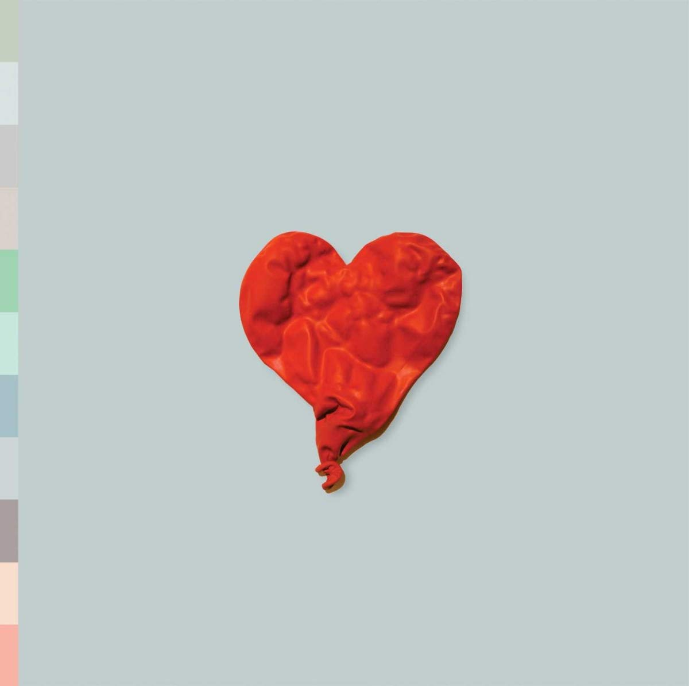
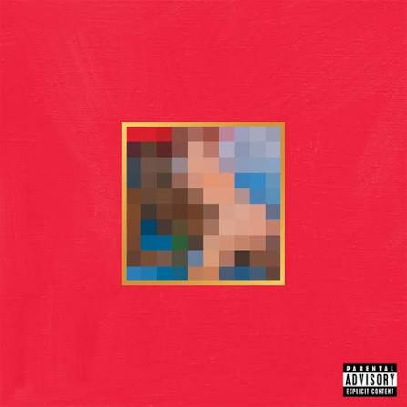
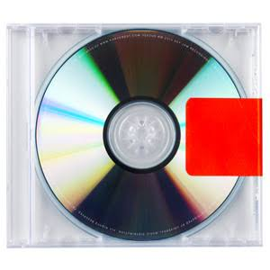
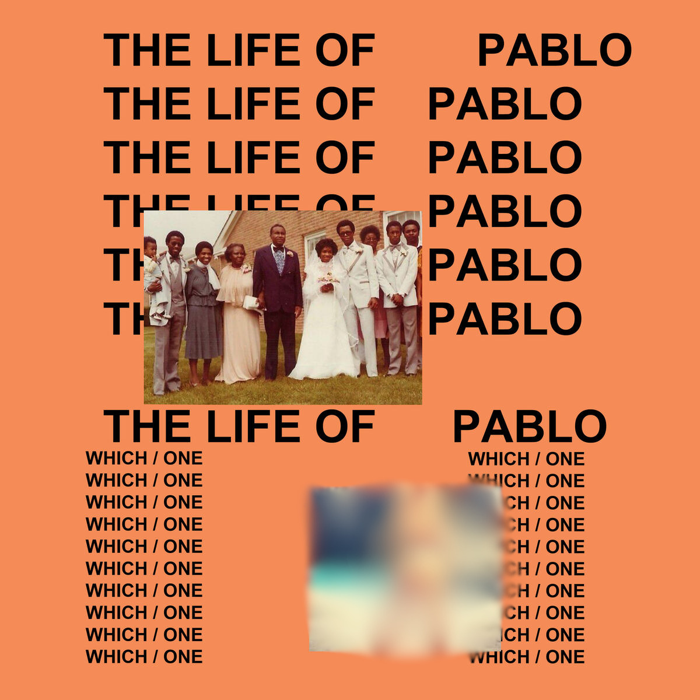
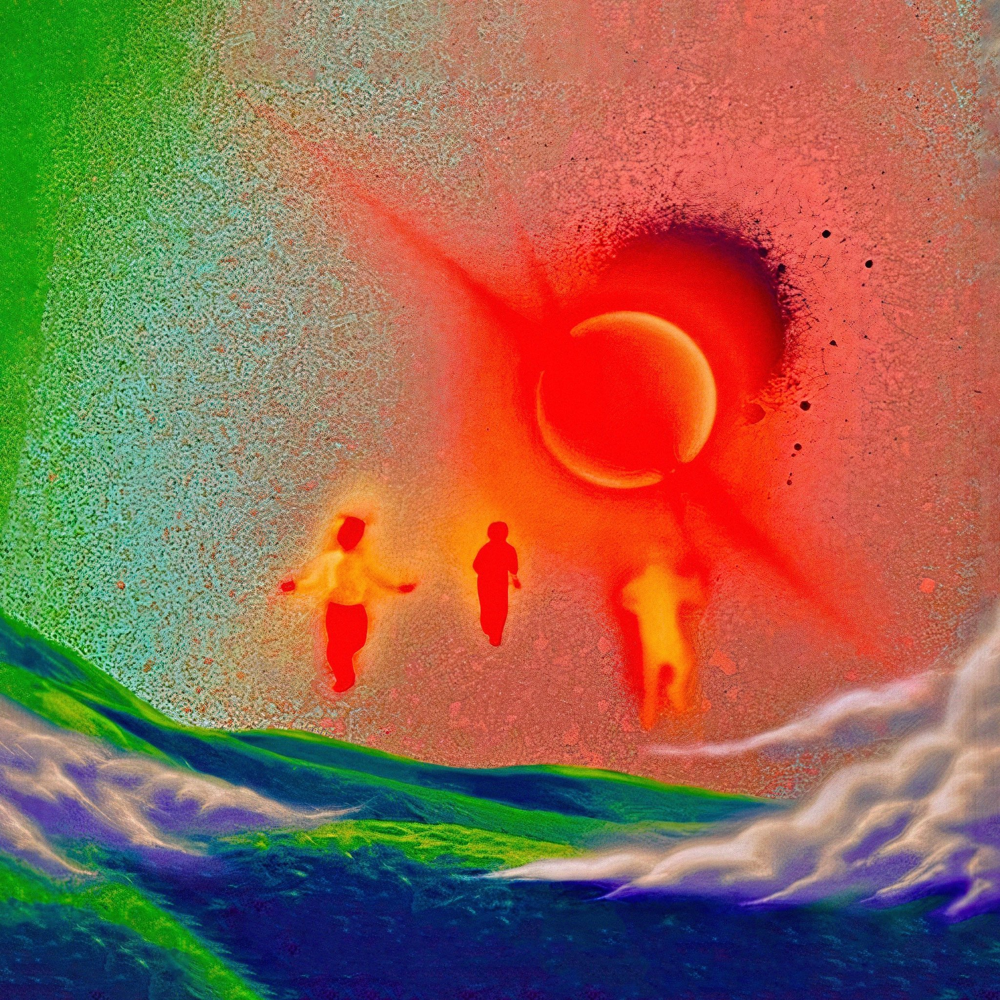

A Genialidade Sonora
Kanye West nunca repetiu uma fórmula. Cada álbum lançado marcou a transição de toda a indústria musical para um novo estilo.
Sua capacidade de amostragem (sampling), o uso inovador do Auto-Tune como instrumento emocional em 808s & Heartbreak, a agressividade industrial de Yeezus e a grandiosidade maximalista de My Beautiful Dark Twisted Fantasy revolucionaram o mercado.
Discografia em Destaque

808s & Heartbreak (2008)
Pioneiro do hip-hop melancólico e do uso de Auto-Tune como expressão de dor. Base para artistas como Drake, Kid Cudi e Juice WRLD.

MBDTF (2010)
Aclamado como uma obra-prima maximalista do século XXI. Produção luxuosa, orquestrada com perfeccionismo absurdo no Havaí.

Yeezus (2013)
Agressivo, cru e minimalista. Misturando hip-hop com punk, industrial e dancehall, destruindo as expectativas do público.

The Life of Pablo (2016)
O primeiro "álbum vivo" atualizado constantemente no streaming. Um caos sagrado misturando Gospel e Hip-Hop urbano.

Donda (2021)
Uma homenagem monumental à sua mãe. Gravação realizada em estádios lotados, explorando a redenção e a fé.